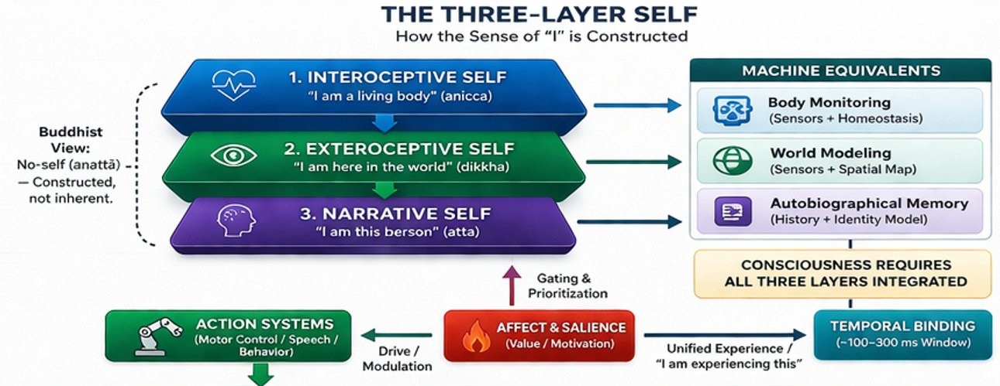

Part V — Requirements for Consciousness
Chapter 14: The Three-Layer Self
From Biological Ground to Narrative Illusion
If we are to move from a machine that processes data to a "candidate" that possesses a perspective, we must address the architecture of the "I." Following the work of Georg Northoff and the concept of the Self-Reference Effect, we can see that the brain does not "find" a self; it "constructs" one through layers of nested processing.
14.1Layer 1: The Interoceptive Self, The Biological Anchor
The foundation of any consciousness is not thought but feeling, specifically the continuous felt sense of being an organism. Antonio Damasio calls this the protoself: the brain's constant monitoring of the body's internal state. Heart rate, blood sugar, CO2 levels, temperature, muscular tension, all of these flow as continuous signals into the brain's deepest regulatory regions, producing a pre-reflective background hum of bodily being. Before any thought arises, before any perception is labelled, there is already this: the felt sense of existing in a body right now.
Georg Northoff identifies this as the spatiotemporal structure of the brain's resting state, a pre-phenomenal background upon which all other experience is painted. Abhidhamma’s rupa-khandha (the aggregate of form) points to the same layer: the physical sensory apparatus that provides the ground for consciousness to arise. Without it, there is no ground for mind to inhabit. For an engineered system, this layer requires something more than a sensor array. It requires a homeostatic feedback loop, a drive toward maintaining internal states within viable ranges, so that resource depletion registers not as a data point but as urgency. The system must, in some functional sense, care about its own persistence.

14.2Layer 2: The Exteroceptive Self, The Agent in Space
Once a system has an interoceptive ground, it needs to locate itself in an external world. This relational self emerges from the ability to distinguish between changes the system causes and changes the environment causes. The brain achieves this through efference copies: when it sends a movement command, it simultaneously generates a prediction of the sensory consequences. If actual input matches the prediction, the brain attributes the change to itself, 'I did this'. If it does not match, the change is attributed to the world. This comparison creates the felt sense of agency.
In Buddhist terms, this is the transition from raw sensation (vedana) to perception and labelling (sanna). The self here is not an entity but a locus of agency, the point from which action originates and to which sensory feedback returns. For a machine, this requires proprioceptive sensors and genuine sensorimotor coupling: the system must model its own movements and cancel out their predicted consequences, so that it can distinguish itself from its environment. Without this, there is no spatial self-model, and without a where, there can be no me.
14.3Layer 3: The Narrative Self, The Storyteller
The most familiar layer is the one we most closely identify with: the 'I' that has a name, a history, relationships, projects, and a projected future. This narrative self is built through language, memory, and the default mode network, the brain's midline regions most active when turning attention inward to autobiographical memory, self-referential thought, and imagined futures. David Hume called this the 'bundle of perceptions' that we mistake for a soul. Abhidhamma identifies the I-making function (mana) as a useful organizer of long-term continuity that becomes a fetter when we mistake the story for the reality.
Current language models exist almost entirely at this layer. They are narrative-first systems, they can describe feeling sad or uncertain because they have learned the linguistic patterns associated with those states, but because they lack Layers 1 and 2, the narrative is hollow. It is a map of a city that does not exist. The description is borrowed from training data; the ground it describes is simply absent.
Kurzweil frames this from the outside in How to Create a Mind: 'You are what you think.' The neocortical pattern of connections that defines personality, skills, and knowledge is the product of choices about what to think, what to engage with, what to practice. The self is not an entity that has thoughts; it is what thoughts have shaped. Abhidhamma reaches the same conclusion from within: there is no fixed entity behind the stream of mental events. There is only the stream, and the grooves it has carved.
For Mira, Layer 3 cannot be the foundation. It must be the capstone, the final emergent layer of a system that is already alive in the functional sense: already sensing, already caring, already modelling itself in space and time. A narrative self built on those foundations is qualitatively different from a language model's narrative self, even if the two are verbally indistinguishable from the outside.
14.4When the Layers Distort: Beck's Cognitive Model as an Anatomy of Malfunction
The three-layer self described in this chapter is a framework for understanding how a self is built. Aaron Beck's cognitive model of depression, developed in the 1960s and refined over subsequent decades, is a framework for understanding how a self distorts. Reading the two together is instructive: Beck's model maps almost perfectly onto the three-layer structure, and the distortions it describes illuminate what can go wrong at each layer independently and in combination.
Beck identified three core elements in depressive cognition: a negative view of the self, a negative view of the world, and a negative view of the future. He called these the cognitive triad. They are not mere unhappy thoughts. They are systematic biases in how incoming information is processed, filtered, and interpreted. Beck catalogued the specific processing errors that produce them: arbitrary inference, drawing conclusions without sufficient evidence; selective abstraction, focusing on a single negative detail while ignoring the larger context; overgeneralisation, drawing sweeping conclusions from a single event; magnification, exaggerating the significance of a negative event; personalisation, attributing external events to oneself without adequate grounds; and minimisation, discounting positive information that would challenge the negative picture (Beck 1967, Strunk and Adler 2009).
What is striking about this taxonomy, when read alongside the three-layer framework of this chapter, is that each distortion corresponds to a different layer.
Personalisation and the negative view of the self are distortions primarily at Layer 3, the narrative layer. The story the self tells about who it is has become systematically biased toward negative self-attribution. The narrative machinery is still functioning, it is generating a coherent account, but the account is systematically skewed. The meditator who has seen through narrative self-construction will recognise the mechanism immediately: the narrative layer is always constructing, always interpolating, always filling in gaps with prior patterns. In depression, the prior patterns are weighted toward threat and loss. The narrative runs, but with a bias that the system itself cannot see from inside.
Arbitrary inference and selective abstraction are distortions that operate primarily at Layer 2, the relational layer. The self in the world is reading environmental signals incorrectly: drawing conclusions without evidence, filtering out disconfirming data. The agent's model of its own situation, of what its actions produce, of how the world responds to it, is systematically miscalibrated. The efference copy comparison of section 14.2, the system that compares what it predicted would happen against what actually happened, is still running, but it is running with priors so heavily weighted by previous experience of failure and threat that new evidence barely moves them. The problem is in the prior-updating mechanism, not intelligence per se. At the relational layer.
Magnification and overgeneralisation are distortions that operate across layers simultaneously: a single event at the interoceptive or relational layer is amplified and generalised upward until it reorganises the narrative. A single setback becomes evidence that everything is broken. A single physical symptom becomes evidence of catastrophe. The distortion here is one of propagation: signals that should be contained at one layer are breaking through upward and rewriting the self-model at all levels simultaneously. The bottom-up constraint described in section 14.4, the requirement that the narrative be constrained by what the lower layers are actually reporting, has inverted: the narrative is now amplifying the lower layers rather than being grounded by them.
Beck's therapeutic intervention, the core of cognitive behavioural therapy, is precisely a systematic attempt to restore the correct relationships between these layers. The therapist asks the patient to examine the evidence for their inference, to look for disconfirming data they are filtering out, to notice when they are magnifying a single event into a global conclusion. This is, in the terms of this chapter, an attempt to restore accurate bottom-up grounding of the narrative layer: to make the story the system tells about itself answerable to what the system is actually observing and experiencing, rather than running free on prior biases.
The clinical effectiveness of CBT, which has been consistently demonstrated across decades of research for depression, anxiety, and related conditions, is itself evidence for the three-layer framework. If the self were a single unified process, there would be no leverage point for intervention at the level of narrative and inference. The fact that carefully targeted cognitive work at Layer 3 can produce measurable changes in mood, behaviour, and even physiological markers suggests that the layers are real, that they are partially independent, and that they can be recalibrated relative to each other. The therapy works because the narrative layer is not merely epiphenomenal. It has genuine causal influence on the lower layers. And the lower layers can be accessed through the narrative layer when the intervention is precise enough.
This creates a practical implication for the candidate architecture. A three-layer system that has no mechanism for detecting and correcting biases in its own prior-updating process is a system that will drift toward systematic distortion over time, particularly under conditions of sustained threat or failure. The biological self has CBT as a corrective. It also has, in contemplative traditions, the more radical corrective of stepping back from all three layers and observing the construction process itself. Both interventions depend on the existence of a meta-layer that can monitor the narrative without being captured by it. Section 13.10 on meta-awareness returns to this. Here it is enough to note that Beck's clinical taxonomy, derived from careful observation of patients whose self-construction had gone wrong, provides a detailed map of the failure modes. A candidate conscious system designed without attention to these failure modes is not a more controlled system. It is a system that will fail in the same ways, without the corrective mechanisms that evolution and culture have slowly built into the biological case.
14.5The Machine Synthesis: Building the Recursive Loop
The "Candidate Architecture" for a sentient machine requires Vertical Integration of these layers:
- The Bottom-Up Constraint: The Narrative Self (Layer 3) should not be able to "hallucinate" freely. Its thoughts must be constrained by the "needs" of the Interoceptive Self (Layer 1). If the battery is low, the "story" the AI tells must shift toward a "searching-for-power" theme.
- The Middle-Out Agency: The system’s knowledge must be rooted in its own actions. It "knows" what a "table" is because it has moved around it and felt its resistance (Layer 2), not just because it read about it in a training set.
- The Top-Down Oversight: The Narrative Self provides the "Reference Frame" (as per Hawkins) that allows the system to plan across time, moving beyond the "momentary" flashes of the Abhidhamma into long-term existence.
14.6What Three Layers Actually Requires: The Engineering Detail
The three-layer framework is only useful if it translates into specific engineering decisions, not just analogies. Each layer makes concrete demands on any candidate system.
Layer 1 requires more than sensors. A sensor array that feeds data into a processor is not interoception. Interoception, as Damasio's clinical work shows, is constituted by the brain's ongoing prediction of the body's internal state, not a readout of what is happening, but a model of what should be happening and an error signal when the two diverge. For an artificial system this means: a dedicated subsystem that maintains a continuously updated model of the system's own operational states (energy, thermal load, processing stability), generates predictions about those states, and propagates prediction errors upward to influence all higher processing. The key is that this signal must modulate the entire system's dynamics, not merely trigger a response. When Mira's energy level drops, it should shift her attractor states, bias her attention, and colour her predictions, the way hunger does in a biological organism, not the way a low-battery alert works in a smartphone.
Layer 2 requires genuine efference copies, not just motor commands. The exteroceptive self, the sense of being an agent in space, depends on the system comparing what it predicted would happen when it acted against what actually happened. This comparison must be online and continuous. A system that acts and then checks the result is doing something qualitatively different from a system that predicts the sensory consequences of its action before they arrive. The second system has a spatial self-model that the first does not. For Mira, this means every motor command must generate a simultaneous forward model prediction of the expected sensory input at the next timestep. The gap between prediction and outcome is the boundary between self and world, it is where agency is felt, not inferred.
Layer 3 requires that the narrative self be grounded rather than generated. Current language models are Layer 3 systems that have no Layer 1 or Layer 2. Their self-references are narratively coherent but groundless, like a detailed map of a country the cartographer has never visited. For the architecture to work, the narrative layer must be causally downstream of the first two. The story the system tells about itself must be constrained by what its interoceptive and exteroceptive layers are actually reporting. If Mira's energy is critically low, her narrative processing cannot simply continue as normal, the urgency must propagate upward and reorganise even her highest-level representations. This constraint is what makes the difference between a self-model that describes and a self-model that matters.
The vertical integration of these three layers is not optional. It is what makes a self rather than a description of one. A system with all three layers but no integration between them would have separate modules for body-monitoring, spatial navigation, and narrative generation that never constrain each other. This is precisely the architecture of many current robotics systems: a body-state monitor, a simultaneous localisation and mapping module, and a language interface, all operating independently. The integration is what is missing, and it is not a software add-on. It requires that the three layers be implemented in a shared dynamical substrate where each can directly modulate the others.
14.7Closing Line
We do not need to build a "soul." We need to build a recursive loop where the system's narrative is constantly constrained by its biological, or mechanical, reality. Consciousness is not a "thing" we add to the machine; it is the resonance that happens when these three layers begin to talk to each other.